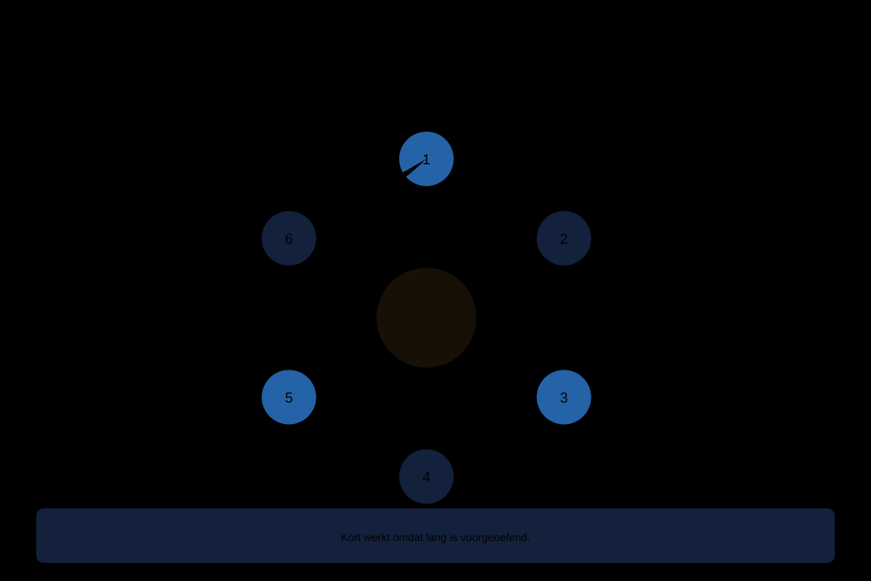

Waarom zelfhypnose het hart van de hele cursus is, het zesstappenprotocol, drie werkvormen, de vier klassieke problemen (afdwalen, in slaap vallen, ongeduld, prestatiedruk), en een oefenschema dat klein genoeg is om echt te beklijven.
6secties
±58 minleestijd + werkboek
2controlevragen
N1Basis
Kernzin 1. Alle hypnose is in essentie zelfhypnose: de cliënt houdt de regie. Zelfhypnose is dus niet de light-versie van het echte werk — het is het echte werk zonder tussenpersoon.
Niveau 1 · Basis: ① Wat is hypnose? → ② Mythes en feiten → ③ Trance en suggestibiliteit → ④ Suggestietaal → ⑤ Basisinducties → ⑥ Verdieping en afronding → ⑦ Zelfhypnose (hier) → ⑧ Synthese niveau 1
01
Waarom zelfhypnose het hart is
⏱ 8 min
Kernzin 1 uit deel 1 luidt: alle hypnose is in essentie zelfhypnose. De begeleider levert taal, tempo en structuur; het werk doet de ander zelf.
Drie praktische consequenties:
Voor uzelf: u bent uw eerste en meest beschikbare oefenmateriaal.
Voor wie u begeleidt: elke sessie hoort uit te monden in iets wat de ander zelf kan.
Voor het resultaat: effect komt uit herhaling en inbedding. Els stopt niet met roken door één sessie, maar mogelijk wel door twaalf weken dagelijks drie minuten.
Voor wie verder wil (spoor B)
ook professioneel geldt zelfhypnose als het middel dat de winst tussen en na sessies bestendigt.
02
Het zesstappenprotocol
⏱ 16 min
Kader (15 sec). "Vijf minuten, doel: rust in mijn schouders."
Houding en tijdsanker. Zitten werkt voor de meeste doelen beter dan liggen. Neem u voor: "over ongeveer vijf minuten kom ik terug" — verrassend betrouwbaar.
Inductie (1–3 min). Ademtelling, korte zwaarte, of oogfixatie in verkorte vorm. Gebruik de eerste weken steeds dezelfde — vertrouwdheid is zelf verdiepend.
Verdieping (30–60 sec, optioneel). Bij korte sessies gewoon overslaan.
Suggestiewerk (1–5 min). Twee tot vier vooraf bedachte kernzinnen.
Zelfde regel als bij begeleiding: wie daarna rijdt of iets bedient, gebruikt de activerende variant.

Figuur 7-1 — het zesstappenprotocol, met een aftakking naar het korte protocol van drie minuten
Controlevraag
Uit Werkboek deel 7, Opdracht 7.4c
1Wat mag er absoluut niet in een opname staan die bedoeld is om iemand mee in slaap te helpen vallen?Toon antwoord
Geen activerende afsluiting: geen 'fris en helder', geen wakker-tellen, geen energieke slotzin. In plaats daarvan een aflopende afsluiting die toestaat dat de luisteraar wegzakt — dit is de meest gemaakte fout bij zelfgemaakte opnames.
03
Drie werkvormen
⏱ 10 min
A. Uit het hoofd. De uiteindelijke vorm: overal toepasbaar. Kost in het begin aandacht om tegelijk begeleider en cliënt te zijn.
B. Met eigen opname. Spreek uw eigen protocol in. Maak twee versies (lang en kort). Neem geen slaapversie op met een activerende afsluiting — die fout is klassiek en wekt precies op het verkeerde moment.
C. Met geschreven kernzinnen. Drie tot vijf zinnen op een kaartje.
In de praktijk: begin twee weken met B of C, stap dan over op A voor korte sessies. Iris' slaaproutine leent zich voor B; Karim heeft A nodig omdat hij het op een gang doet.
04
Vier klassieke problemen
⏱ 10 min
1. Afdwalen. Het meest gemelde en minst problematische probleem. Merk het op, keer zonder oordeel terug. Tien keer afdwalen en tien keer terugkeren is een geslaagde oefening.
2. In slaap vallen. Rechtop zitten, ogen half open in de eerste minuut, of overdag oefenen. Structureel wegvallen wijst vaak op slaaptekort — bij Iris de kern van haar vraag.
3. Ongeduld. Typisch Daan-materiaal. Kort beginnen (drie minuten, niet vijftien). Beter tien keer drie minuten dan twee keer een kwartier.
4. "Doe ik het wel goed?" Antwoord: dezelfde twee vragen als altijd — reageer ik op mijn eigen suggesties, en is dit comfortabel? Meer criteria zijn er niet.
05
Een oefenschema dat beklijft
⏱ 8 min
Vier ontwerpregels:
Klein beginnen. Drie minuten per dag, twee weken lang.
Koppelen aan iets bestaands. Iris koppelt aan "licht uit"; Karim aan "de gang voor een vergadering"; Els aan haar oude rookmomenten (deel 14).
Vast doel per periode. Eén doel voor twee weken.
Bijhouden, minimaal. Een streepje per dag volstaat.
Terugval hoort erbij. Plan vooraf wat u doet na een onderbreking: de kortste versie, dezelfde dag nog, zonder inhaalpoging (deel 17 bouwt hierop voort).
Controlevraag
Uit Werkboek deel 7, Opdracht 7.8
1Waarom mag het startschema voor zelfhypnose niet groter zijn dan drie minuten per dag, ook als iemand meer tijd heeft?Toon antwoord
Omdat het verschil tussen wel en niet volhouden zelden in aanleg zit en bijna altijd in regelmaat. Een klein, haalbaar schema wordt echt gedaan; een groot schema (bijvoorbeeld twintig minuten) is het schema van iemand die na vier dagen stopt. Uitbreiden mag pas zodra u het mist op een dag dat het niet lukte.
06
Zelfhypnose aan een ander uitleggen
⏱ 6 min
Vier onderdelen, in deze volgorde:
Kernzin 1 uitleggen.
Het protocol voordoen, niet alleen beschrijven.
Eén vorm kiezen en het startschema vaststellen.
De vier problemen vooraf normaliseren.
En één ding niet doen: beloven wat het gaat opleveren (grens 4).